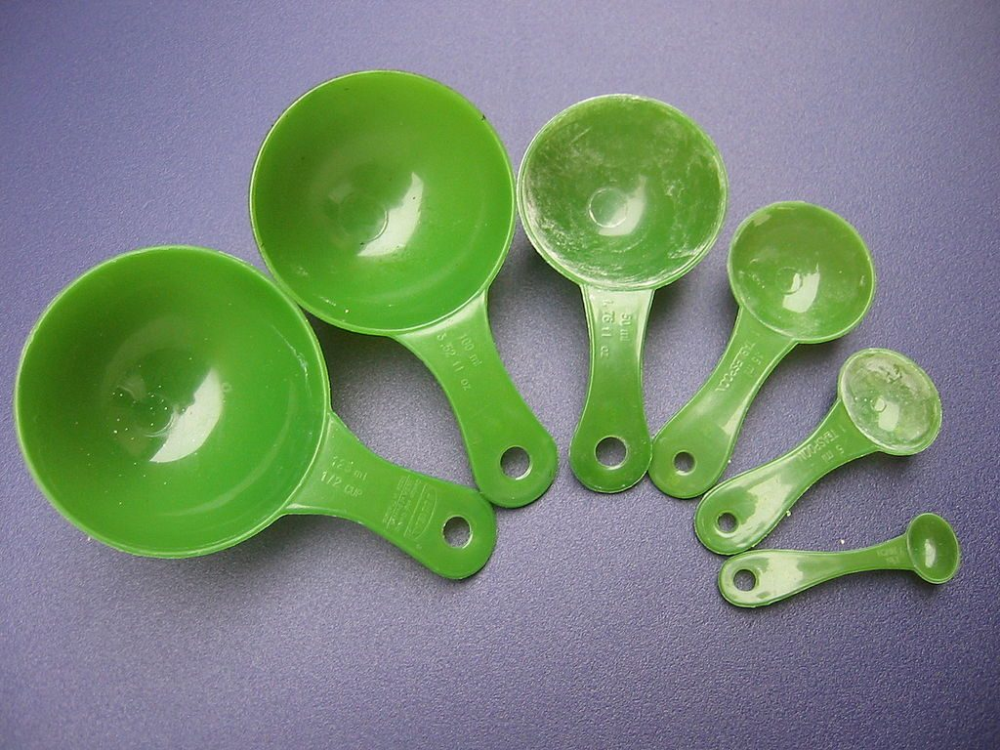
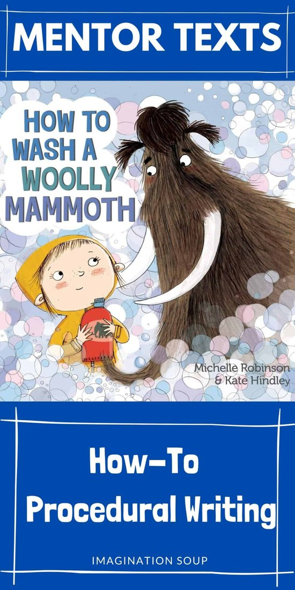
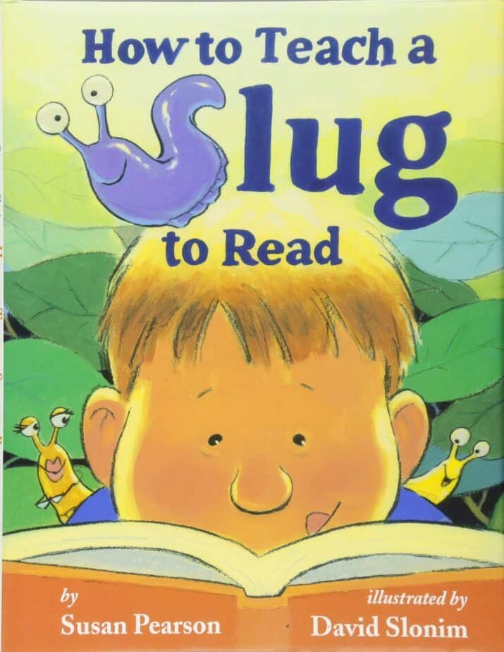
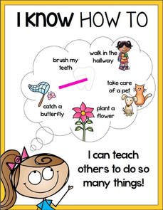
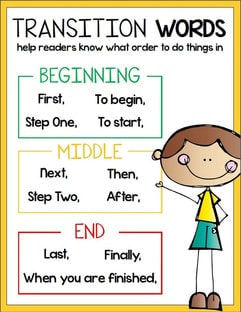
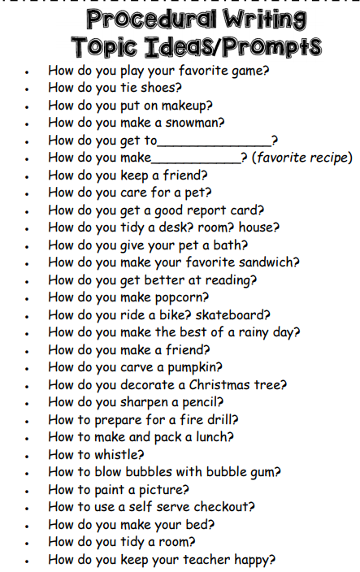
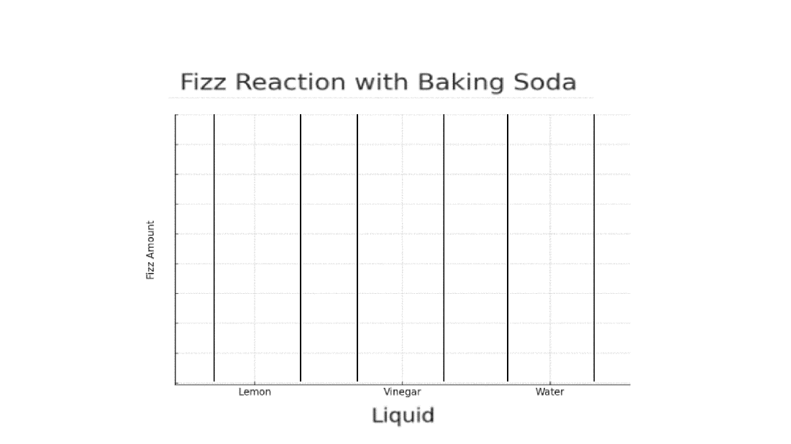

🧪 Week 9 of 35 — Unit 2: Changes in Matter
Unit 2: Changes in Matter | Dates: Nov 1 – Nov 5, 2026 | Week: 6 of 7 | Year week: 9 of 35 |
Class | Sunday | Monday | Tuesday | Wednesday | Thursday |
This week's updates / notes: | Materials Needed: flour, sugar, baking powder, cocoa powder, salt, milk, vegetable oil  Send home Science Fair Parent Letter Send Student Science Fair Letter Some lessons have been transferred over from the previous week due to time. | ||||
Morning Meeting | Week #5 SEL Lesson — decide which day you prefer to do this lesson. THEME: KINDNESS 5A- Individual Activity to Whole Group Meeting 5B- One to One Enrichment 5C- Morning Worksheets | Week #5 SEL Lesson — decide which day you prefer to do this lesson. THEME: KINDNESS 5A- Individual Activity to Whole Group Meeting 5B- One to One Enrichment 5C- Morning Worksheets | Week #5 SEL Lesson — decide which day you prefer to do this lesson. THEME: KINDNESS 5A- Individual Activity to Whole Group Meeting 5B- One to One Enrichment 5C- Morning Worksheets | Week #5 SEL Lesson — decide which day you prefer to do this lesson. THEME: KINDNESS 5A- Individual Activity to Whole Group Meeting 5B- One to One Enrichment 5C- Morning Worksheets | Week #5 SEL Lesson — decide which day you prefer to do this lesson. THEME: KINDNESS 5A- Individual Activity to Whole Group Meeting 5B- One to One Enrichment 5C- Morning Worksheets |
Social-Emotional Learning | SEL- Kindness | SEL- Kindness | SEL- Kindness | SEL- Kindness | SEL- Kindness |
Vocabulary & Spelling — Word of the Day (G5 + G3) Routine: give the definition first (no guessing) → students share where they might use it, similar/different words. Morphology, examples/non-examples, synonyms/antonyms & more on the vocabulary cards: Vocabulary Padlet (incl. Spelling: words Mon · test Thu) | G5: anticipate — To expect or look forward to something that is going to happen. G3: remark — To say something as a comment or observation. Unit: contrast — The state of being strikingly different from something else when compared. | G5: condition — A state of being or a requirement that must be met for something to happen. G3: approach — To come near or nearer to something in distance or time. Unit: expand — To increase in size, amount, or detail; to make larger or more complete. ——— Spelling — introduce Week 9 lists (practice all week). Low (Building Spelling Skills, List 9): some, come, home, fun, funny, run, running, ran, us, use High (Building Spelling Skills, List 9): Tuesday, Wednesday, Thursday, Saturday, January, February, July, August, September, November, month, year, holiday, autumn, season, calendar, second, minute | G5: precede — To come before something in time, order, or position. G3: benefit — An advantage or good result that comes from something. Unit: condense — To make something denser, shorter, or more concise; to compress. | G5: observe — To watch carefully or notice something with attention. G3: notice — To become aware of something by paying attention; to see or detect. Unit: observe — To watch carefully or notice something with attention. | G5: distinction — A clear difference between two or more things. G3: survive — To continue to live or exist, especially after a difficult or dangerous situation. Unit: gradually — Slowly, in small steps over time. ——— |
READING | Guided Reading — Point of View. BrainPOP: Point of View · Mentor Text List for Point of View Warm-up: write two sentences on the board — "I walked to the store." / "She walked to the store." Ask: "What do you notice? How are they different?" Mini-lesson (5 min): introduce Point of View. First-person — the narrator is part of the story and uses "I," "me," "we." Third-person — the narrator is not part of the story and uses "he," "she," "they." Give examples of each (First: "I love to read." Third: "She loves to read."). Activity (5 min): hand out a short paragraph in first-person and third-person; students highlight or underline the words that give away the point of view. Wrap-up (2 min): students explain the difference between first and third person to a partner. Rotations (stations for the week): SeeSaw: 5C POV Lesson for any book · Guided/Independent POV Lesson · G4 POV Activity with some Reading · POV Gr 4-6 IXL: G4 Point of View (Narrative) · G5 Point of View (Narrative) · G5 Compare/Contrast Views · G4 Distinguish Points of View Google Classroom: KAMI WS folder Kahoot: Point of View G3 RazKids, EPIC, Book Bag | Guided Reading — First-person point of view. Warm-up: review first-person; a few students give an example first-person sentence. Mini-lesson (5 min): read a short first-person passage (e.g., an excerpt from Diary of a Wimpy Kid or The One and Only Ivan, or any book from the mentor-text list in the differentiation row). Discuss how the story feels more personal because we are inside the character's head. Activity (5 min): students write a 3-4 sentence story from the first-person perspective, starting with "I was walking through the park when…"; share with a partner. Wrap-up (2 min): "How does it feel to write from your character's perspective? How do you know it's first person?" Rotations: see Sunday's station list or the differentiation row below. | Guided Reading — Third-person point of view. Warm-up: review third-person; students give an example third-person sentence. Mini-lesson (5 min): read a short third-person passage (e.g., Charlotte's Web or Harry Potter, or any book from the mentor-text list). Discuss how the story feels like an observer watching the characters, and how we can know different characters' feelings through third-person narration. Activity (5 min): students rewrite Monday's story from a third-person perspective, starting with "She was walking through the park when…"; share with a partner. Wrap-up (2 min): "What did you notice when you changed your story to third person? How do you know it's third person?" Rotations: see Sunday's station list or the differentiation row below. | Guided Reading — Comparing points of view. Warm-up: recall the two points of view learned; write "First Person" and "Third Person" on the board. Mini-lesson (5 min): show a simple story told from both perspectives (or any book from the mentor-text list). First person: "I found a treasure chest." Third person: "She found a treasure chest." Ask how the two perspectives feel different. Activity (5 min): in pairs, students take turns retelling a story they know (fairy tale, personal story, etc.) — one tells it in first person, the other retells the same story in third person. Discuss how changing the point of view affects the story. Wrap-up (2 min): "Which point of view do you like writing from? Why?" Rotations: see Sunday's station list or the differentiation row below. | Guided Reading: review + Point of View EXIT Ticket · Review / catch-up. Rotations: see Sunday's station list or the differentiation row below. |
Standards | Reading Literature — CCSS RL.5.4 Determine the meaning of words and phrases as they are used in a text, including figurative language such as metaphors and similes. EE.RL.5.4 Determine the meaning of words and phrases in a text. Language — CCSS L.5.2.A Use punctuation to separate items in a series. EE.L.5.2.A Use ending punctuation when writing a sentence. CCSS L.5.1.C Use verb tense to convey various times, sequences, states, and conditions. EE.L.5.1.G Use appropriate verb forms to convey present and past tense. Reading Foundational Skills — CCSS RF.5.3.C Use context to confirm or self-correct word recognition and understanding, rereading as necessary. EE.RF.5.3.C Use context to confirm word recognition. CCSS RF.5.3 Know and apply grade-level phonics and word-analysis skills. EE.RF.5.3 Use letter-sound knowledge and syllabication patterns to read words. Writing — CCSS W.5.2.B Develop the topic with facts, definitions, concrete details, quotations, or other information. CCSS W.5.3.C Use a variety of transitional words, phrases, and clauses to manage the sequence of events. CCSS W.5.4 Produce clear and coherent writing appropriate to task, purpose, and audience. | ||||
Assessment | SeeSaw — Complete the Brownie in a Mug writing activity: How to Make a Brownie | Informal Observations | Informal Observations | Informal Observations | Have students list the parts of a procedure writing piece |
Differentiation | EPIC: How to Read a Recipe — discuss the elements of a recipe and point them out in the text (Introduction/Title, Materials/Ingredients, Method, Conclusion). If you need to pre-teach pronouns — BrainPOP ELL: Review Pronouns · Personal Pronouns · Object Pronouns Mentor texts for Point of View: First-person — Diary of a Worm (Doreen Cronin); I Am Human (Susan Verde); The Pain and the Great One (Judy Blume, alternating brother/sister first-person); Henry's Freedom Box (Ellen Levine); The One and Only Ivan (Katherine Applegate). Third-person — The Day the Crayons Quit (Drew Daywalt); Charlotte's Web (E.B. White, omniscient); Click, Clack, Moo: Cows That Type (Doreen Cronin); Because of Winn-Dixie (Kate DiCamillo); How to Train Your Dragon (Cressida Cowell). Multiple perspectives — Voices in the Park (Anthony Browne); Two Bad Ants (Chris Van Allsburg); Hey, Little Ant (Phillip Hoose and Hannah Hoose). | Use these mentor texts to talk about transitional words (link was embedded in an image in the old 25-26 plan).   Writing resources (from the 2025-26 plan):   | Adaptation: for students who need more support, provide word lists to practice with before they start creating their sentences. | Teachers should choose from the variety of above activities to best suit students' abilities. | Teachers should choose from the variety of above activities to best suit students' abilities. |
GRAMMAR (Sun & Tue) WRITING (Mon & Wed) Thu = catch-up IXL this week: Low: Greetings and closings of letters (G2) High: Use coordinating conjunctions (G3) Stretch: Commas with a series (G5) · Commas with compound and complex sentences (G5) | Grammar (Sun) — Commas in a Series OBJ: Use commas to separate three or more items in a series Packets — Low (K-1): K: Review: Capitalization (extend to lists of capitalized words), G1: Review — Commas (teacher introduces series concept) · Mid (2-3): G2: L2.11 Commas in Series and in Letters, G3: L2.10 Commas in a Series · High (4-6): G4: L2.8 Commas — Introductory Words/Series/Direct Address, G5: L2.12 Commas — Series/Direct Address/Multiple Adjectives, G6: L2.10 Commas — Series/Direct Address/Multiple Adjectives G4-G6: add commas with multiple adjectives. | Writing — Transfer the procedure to Google Slides (day 1 of 2) Model a clean slide layout; students transfer Title/Goal, Materials, and numbered Method onto slides — one section per slide — keeping command verbs and order, plus the setup diagram. Work continues Wednesday. TWR: one heading + one sentence per slide — a key-word heading (2-3 words) and one full summary sentence; students move both ways (sentence to key words, key words to sentence). Differentiation: Low/Med use a pre-made slide template; High adds a results/observation slide. Resources: co-built rubric — word banks: command verbs, time connectives IXL: Combine sentences: subjects (G2) — Subjects and predicates (G3) — Stretch: Compound sentences (G4) — Commas with compound/complex (G5) | Grammar (Tue) — Commas in Compound Sentences OBJ: Place commas before coordinating conjunctions in compound sentences Packets — Low (K-1): K: Review: Sentences (or/and/but practice), G1: Review — Apostrophes, G1: review commas · Mid (2-3): G2: L2.12 Commas in Compound Sentences, G3: L2.11 Commas in Compound Sentences, G3: Review: Comma Usage · High (4-6): G4: L2.9 Commas in Compound Sentences, G4: Review: Comma Usage, G5: L2.13 Commas — Combining Sentences/Set-Off Dialogue, G6: L2.11 Commas — Combining Sentences/Set-Off Dialogue G5-G6: comma also with set-off dialogue. | Writing — Finish and polish the slides (day 2 of 2) Students complete their slides, add results and visuals, then reread to check steps are clear and in order. Partners give "2 stars and a wish" on whether a reader could follow the procedure from the slides. TWR: combine choppy steps — "Get a cup. Fill it." becomes "Fill a cup with warm water."; partners flag one choppy pair to combine. Resources: co-built rubric Writing anchor charts / resources (from the 2025-26 plan): Writing: Brainstorm ideas for writing their own Procedural text (What do you want to teach someone?)  | Catch-up day — reteach or extend this week's grammar and writing; finish unfinished drafts; assign this week's IXL practice (links in the left column: Low = reteach, High = consolidate, Stretch = extension). |
MATH Pacing W08 · B2 Addition, subtraction, multiplication and division W03–W08 | |||||
Objectives | Students will organize a data set using tally marks and frequency tables, and create a line plot to display measurement data in fractions of a unit. | Students will draw a scaled pictograph and a scaled bar graph to represent a data set, and solve one- and two-step problems using the graphs. | Students will interpret line graphs to analyze change over time and understand how a circle graph (pie chart) represents parts of a whole (fractions/percentages). | Students will analyze and compare data presented in various graph formats to solve multi-step, real-world problems and make informed decisions. | Students will demonstrate mastery in reading, creating, and interpreting data from various graphs (line plots, bar graphs, line graphs). |
Standards | CCSS 3.MD.B.3 — Draw a scaled picture graph and a scaled bar graph; solve one- and two-step "how many more/less" problems (prerequisite). CCSS 5.MD.B.2 — Make a line plot for a data set of measurements in fractions of a unit (1/2, 1/4, 1/8); use fraction operations to solve problems from line plots. | CCSS 3.MD.B.3 — Draw a scaled picture graph and a scaled bar graph to represent a data set with several categories; solve one- and two-step "how many more/less" problems (prerequisite). | CCSS 3.MD.B.3 (prerequisite). CCSS 5.G.A.2 — Represent real-world and mathematical problems by graphing points in the first quadrant of the coordinate plane; interpret coordinate values in context (applies to line graphs). | CCSS 3.MD.B.3 (prerequisite). CCSS 5.MD.B.2 — Use fraction operations to solve problems involving information presented in line plots (e.g., find the total, average, or difference). | Formative assessment covering 5.MD.B.2, 5.G.A.2, and prerequisite data concepts. |
Differentiation | Each lesson includes partner practice, common misconceptions, independent practice (e.g., plotting fractions), and a challenge to find the mean, median, or mode from the line plot. | Each lesson includes partner practice, common misconceptions, independent practice (e.g., importance of a key/scale), and a challenge to create a graph with a multi-unit scale (e.g., each symbol = 5). | Each lesson includes partner practice, common misconceptions, independent practice (e.g., reading x- and y-axis), and a challenge to create a simple circle graph from data with easy fractions (e.g., 1/2, 1/4). | Each lesson includes partner practice, common misconceptions, independent practice (e.g., comparing two data sets), and a challenge to write their own real-world problems based on a given graph. | Assessment provides options for students (e.g., create a graph vs. interpret a graph). Challenge questions require multi-step analysis or comparing different data representations. |
EXPLORER 3-day plan (Mon–Wed) Write & Build IXL this week: Low: Classify Matter (Gr 2, review) · High: Heating, Cooling & Changes of State (Gr 3, review) Stretch: Conservation of Matter Using Graphs (Gr 5) · Identify Mixtures (Gr 5) | Review / catch-up — revisit last week's Explorer learning; finish unfinished investigations or SeeSaw posts; preview this week's topic. | Mon · Finish Your Write-Up 1. Review — Checklist: question, hypothesis, materials, procedure, data, graph, conclusion — what's missing? 2. Write — Finish and polish every section on the Science Fair template. 3. Peer check — Partners proofread each other's write-up for missing sections or unclear sentences. 4. Teacher check — Teacher confirms the write-up is complete before students move to slides. Objective: Can produce a complete, accurate written record of their investigation. Assessment: All sections of the Science Fair template are complete and accurate. Differentiation: Complete with a checklist and support / with some support / independently. Explorer photos / resources (from last year's plans): Hypothesis: If baking soda is added to lemon juice, vinegar, and water, then the lemon juice and vinegar will not act the same compared to water, because they are acidic and will react with the baking soda (a base), while water will not do anything (being neutral, will show little or no reaction). They can also attempt recording the outcome in a graph.  | Tue · Build Your Slides (Session 1) 1. Look — Preview a finished example presentation (last year's egg-float project) to see what a complete slide deck looks like. 2. Open — Students open their own copy of the Science Fair Presentation Template (Ask a Question, State Hypothesis, Materials, Procedure slides). 3. Transfer — Copy over the question, hypothesis, materials list, and numbered procedure from the written template onto the matching slides. 4. Check — Teacher/peer check: does each slide match the written work? Objective: Can transfer written research onto the first half of a presentation slide deck. Assessment: Question, hypothesis, materials, and procedure slides are complete and match the written work. Differentiation: Copy with word-for-word support / with some support / independently, in their own words. | Wed · Build Your Slides (Session 2) + Start Your Board 1. Finish slides — Complete the remaining slides: Observations/Data, Results, Research, Reflection (did the results support the hypothesis? what did you learn?). 2. Print — Print the finished slides and the Science Fair project board heading labels (Question, Hypothesis, Research, Materials, Procedure, Data, Pictures, Results, Discussion, Conclusion). 3. Bring in — Students bring in their tri-board (families notified via the Parent Note sent home in Week 4). 4. Lay out — Arrange headings and printed slides on the board before gluing, using the Display Board diagram as a guide. Objective: Can complete a full presentation slide deck and plan a clear, organized board layout. Assessment: All 8 slides are complete; board layout is planned before anything is glued down. Differentiation: Use a labelled layout template / a partial layout guide / plan independently. Resources — Science Fair Presentation Template (slides, provided) · Science Fair project board heading labels (provided) · Display Board diagram — Science Journal (provided) | Review / catch-up — consolidate Mon–Wed learning; complete recordings/reflections; reteach or extend as needed. |
Closing Circle (SELG) | |||||